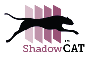

<!doctype html>
<html>
<head>
<meta charset="UTF-8">
<link href="stylesheet.css" type="text/css" rel="stylesheet"></link>
<title>Untitled Document</title>
</head>

<body>
<nav>
	<div>
		<a href="www.shadowcat.com"></a>
	</div>
	
	<div class="center menu inline">
		<ul>
			<li><a href="index.hmtl"> Home</a></li>
			<li><a href="intro.html">Intro</a></li>
			<li><a href="thedifference.html">The Difference</a></li>
			<li><a href="thebenefits.html">The Benefits</a></li>
		</ul>
	</div>

	<div class="inline">
		<a class="contact" href="#contactus"></a>
	</div>
</nav>

<div class="header center">
	<p class="headline">
		Assess each student’s ability, <br />
		beyond a shadow of a doubt–with ShadowCAT
	</p>
	
</div>

<div class="three-section">
	<div class="inline center width33">
		<p class="orange">Guarantees full coverage ofthe test blueprint</p>
		<p>
			ShadowCAT guarantees that the test will adhere to all test requirements for every test taker–something no other adaptive algorithm can guarantee.
		</p>
	</div>
	<div class="inline center width33">
		<p class="red">Provides flexibledelivery options</p>
		<p>
			ShadowCAT supports four adaptive delivery approaches for the same set of test requirements and blueprints offering you maximum configurability and flexibility.
		</p>
	</div>
	<div class="inline center width33">
		<p class="purple">Offers a very highlevel of scalability</p>
		<p>
			ShadowCAT supports deployments of computer adative assessments that scale from one student to many at the school, district, state, or national level.
		</p>
	</div>
</div>

</body>
</html>
